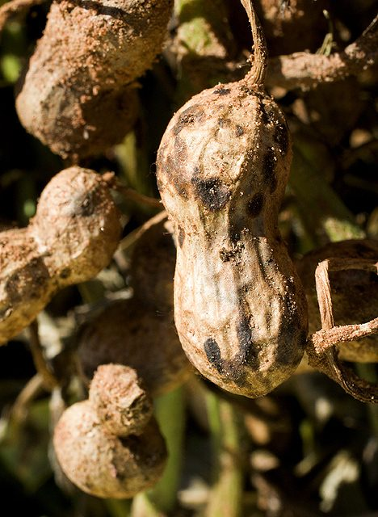

शीथ ब्लाइटSheath Blight of Rice
Rhizoctonia solani · Ceratobasidiaceae · FNG-0032

- Scientific name वैज्ञानिक नाम
- Rhizoctonia solani J.G. Kühn
- Family कुल
- Ceratobasidiaceae
- Hindi हिंदी
- शीथ ब्लाइट
- Local names स्थानीय नाम
- sheath blight, dhan ka sheath blight, rice sheath blight
- Status here यहाँ की स्थिति
- native
- Movement आवागमन
- Resident, here all year
- Known from कहाँ दर्ज
- Others have published records from the Basti–Ayodhya districts बस्ती–अयोध्या के ज़िलों से दूसरों के प्रकाशित अभिलेख
- IUCN IUCN
- not evaluated
- Review समीक्षा
- audited and independently read
When to look कब देखें
Expected mainly in June, July, August, September, October. मुख्यतः जून, जुलाई, अगस्त, सितंबर, अक्टूबर में अपेक्षित।
शीथ ब्लाइट / Sheath Blight of Rice
Rhizoctonia solani J.G. Kühn — Ceratobasidiaceae
शीथ ब्लाइट — बरसात के मौसम में धान की पत्तियों के आधार पर भूरे रंग के दाग जो पूरी पत्ती को ढक सकते हैं। लक्षण अगस्त-सितंबर में सबसे भीषण होते हैं। यह रोग पूरे पौधे को लपेट सकता है और दानों को भरने में बाधा डालता है। नमी और गर्मी इसका पोषण करते हैं, इसलिए दक्षिण-पूर्व उत्तर प्रदेश में हर साल लाखों टन अनाज खोता है।
Quick Identification त्वरित पहचान
| Feature | Description |
|---|---|
| Initial lesion | Oval to circular water-soaked spots on leaf sheaths, starting at the base of the leaf |
| Lesion color | Tan to brown, with irregular dark brown or reddish margins; appears greasy |
| Lesion spread | Lesions coalesce and may wrap around the sheath, girding the stem |
| Lesion surface | May show concentric rings or a target-like pattern |
| Blade symptoms | Lesions on blades are more angular and irregular; confined between veins |
| Advanced stage | Severe infection kills the entire leaf sheath and can extend to adjacent sheaths |
| Sclerotia | In wet conditions, small hard bodies (sclerotia, size of mustard seeds) may be visible on lesions |
Field tip: Walk through a rice field in August or September. Look at the lower leaf sheaths near the water line. Brown, water-soaked lesions with darker edges that coalesce into larger patches indicate sheath blight. Pinch the sheath; it becomes soft and mushy if severely infected.
हिंदी — कैसे पहचानें: धान के पत्ते के आधार पर भूरे, गीले दाग। बाहर से देखो तो चिपचिपा लगता है। अगस्त-सितंबर में। दाग बड़े हो जाते हैं, पूरी पत्ती को ढक सकते हैं।
Morphology and Symptomatology आकृति और लक्षण
Fungal structures (visible with microscope):
| Structure | Appearance |
|---|---|
| Mycelium | Colourless to light brown, thread-like; spreads through plant tissues |
| Sclerotia | Small, dark brown, hard bodies 1–2 mm diameter; appear as black specks on infected tissue |
| Basidiospores | Hyaline, one-celled, 10–18 × 6–12 µm; produced on basidiomata in culture (rarely in field) |
Disease progression:
- Infection: Occurs through mycelial contact on infected plant debris; spores are not the primary infection mechanism
- Colonization: Mycelium enters the plant through cuts or wounds, or directly into turgid tissues
- Symptoms: Water-soaked lesions appear within 3–7 days; lesions expand and coalesce
- Severe infection: Girdles the stem, cutting off water and nutrient transport; causes necrosis of upper leaves
Life Cycle / Phenology जीवन चक्र
In eastern UP (rice crop: June–November):
| Stage / Month | Event | Notes |
|---|---|---|
| June | Rice transplanted into flooded paddies; crop begins growth | Early infection can occur if crop debris from previous season is present |
| July–August | Vegetative growth; plant heights reach 30–60 cm; warm, wet conditions favor fungus | Mycelium from soil and crop residue colonizes lower leaf sheaths |
| August–September | PEAK DISEASE PERIOD — Lesions visible and spreading rapidly; high humidity and warmth optimal for fungus | Disease can cover 50–100% of lower sheaths; secondary spread via leaf contact |
| October | Crop approaches flowering and grain-fill; disease intensity may decrease if water is drained | Reduced humidity slows fungal growth |
| November | Harvest; infected crop residue remains in field | Inoculum overwinters in soil and residue; will infect next season's crop |
हिंदी — जीवन चक्र: मिट्टी में बीज की तरह सोता है। धान बोने के बाद सक्रिय हो जाता है। अगस्त-सितंबर में भीषण। नवंबर में फसल काटते समय संक्रमित अवशेष वापस मिट्टी में जाता है।
Ecology and Substrate पारिस्थितिकी और आधार
Obligate plant pathogen: Rhizoctonia solani is a soilborne fungus that survives as mycelium and sclerotia in crop residue and soil.
Moisture and temperature requirements:
- Optimal for infection: 28–32°C, high humidity, flood water
- Rapid colonization: Occurs fastest in warm, wet monsoon conditions
- Stress conditions: >35°C slows growth; dry conditions inhibit infection
- Survival: Sclerotia persist in soil for years; mycelium survives in crop debris for one season
Host specificity: Infects rice, wheat, maize, and many other crops; highly polyphagous.
Transmission:
- Primary: Mycelium in soil and crop residue infects plants directly
- Secondary: Mycelium spreads from plant to plant via contact in flooded paddies
- Inoculum source: Previous season's infected crop residue left in the field
Agricultural / Human Relevance कृषि प्रासंगिकता
Economic impact:
- Yield loss: can be heavy in a bad season, depending on variety, timing and weather.
- Severity: In susceptible varieties with peak monsoon conditions, can destroy the entire harvestable area of the field
- Geographic significance: One of the most damaging rice diseases in eastern UP and Bangladesh
Management — in order of priority:
- Resistant varieties (MOST EFFECTIVE):
- Recommended in UP: IR 64, Pusa 1121, Samba Mahsuri, Parmal (all have resistance genes)
- Susceptible older varieties: Basmati, Ambika — incur heavy losses every year
- Use certified seed of resistant varieties from recognized seed farms
- Cultural practices:
- Crop residue management: Remove infected stubble and straw from the previous crop; burn or bury before planting
- Field sanitation: Drain paddy water in September to reduce humidity
- Plant spacing: Adequate spacing reduces humidity within crop and slows spread
- Avoid excessive nitrogen: High nitrogen increases succulent growth susceptible to infection; use balanced fertilization
- Fungicide treatment (supplementary):
- Spray timing: Monitor crops in August; spray at first visible lesions
- Fungicide choice: Carbendazim or Hexaconazole; apply 2 times at 10-day intervals
- Caution: Do not exceed two sprays per season to avoid fungicide resistance
- Cost: ₹400–600 per hectare; economical for premium varieties
- Integrated approach:
- Use resistant variety (primary control)
- Remove previous crop residue
- Monitor in August; seek advice from the Krishi Vigyan Kendra once symptoms are spreading
- Drain water in late September to reduce humidity
हिंदी — रोकथाम: पुरानी पराली निकालो। रोधक किस्म लगाओ। अगस्त में देखना; दाग दिखें तो छिड़काव करो। सितंबर में पानी निकालो।
Expected Locally स्थानीय रूप से अपेक्षित
Not a field record. Written from published accounts for eastern Uttar Pradesh. No confirmed local sighting yet — if you have seen it, that is what the atlas needs.
अभी तक स्थानीय पुष्टि नहीं। यह विवरण प्रकाशित स्रोतों से है, किसी अवलोकन से नहीं।
Sheath blight is expected in Basti and Ayodhya districts wherever rice is grown in flooded paddies, particularly in susceptible varieties during warm monsoon seasons (July–October). Disease severity depends on variety and moisture. In years with high July–September rainfall and warm temperatures, infections can be severe in susceptible varieties. Resistant varieties show minimal or no symptoms. GBIF holds published records from these districts.
Distribution वितरण
Global range: Found in tropical and subtropical rice-growing regions worldwide, particularly in Asia where rice is cultivated.
In India: Present in all rice-growing states; endemic in the Indo-Gangetic plain.
In Uttar Pradesh: Found in all rice-growing districts; eastern UP experiences significant disease pressure every season.
In Basti district / eastern UP: Expected in every rice field during the monsoon season; severity depends on variety and weather conditions.
Research Questions शोध प्रश्न
- In your village, what percentage of rice plants show sheath blight symptoms in August and September? / आपके गाँव में अगस्त-सितंबर में कितने प्रतिशत धान के पौधे में शीथ ब्लाइट दिखता है? — Survey 10 farmers; examine 10 plants per field.
- Which rice varieties are grown in your village, and which show the most sheath blight? — Compare symptoms across varieties in the same field.
- Does draining the paddy water in September reduce sheath blight severity? — Compare drained and flooded paddies (same variety).
- How long does infected rice residue remain infectious in the soil? — Plant rice in a field with buried infected stubble; monitor disease progression over two seasons.
- Do farmers remove infected crop residue after harvest, or leave it in the field? / क्या किसान कटाई के बाद संक्रमित पराली निकालते हैं या खेत में छोड़ देते हैं? — Survey 5 farmers; observe field preparation.
Similar Species मिलती-जुलती प्रजातियाँ
| Disease | How to tell apart | हिंदी |
|---|---|---|
| Leaf Blast (Pyricularia oryzae) | Lesions are spindle-shaped with brown center and gray halo; appear on leaf blades, not sheaths | पत्ती पर भूरे निशान, शीथ पर नहीं |
| Brown Spot (Bipolaris oryzae) | Small circular lesions with red-brown centers and yellow halos; appear on both blade and sheath; distinct halo | छोटे गोल निशान, पीली परत |
| Bacterial Leaf Streak | Narrow linear streaks on leaves; yellowish; not brown and coalescing like sheath blight | लंबी पीली लकीरें |
Field rule: Brown, water-soaked, coalescing lesions on leaf sheaths that girdle the stem in warm, wet monsoon conditions = sheath blight.
Taxonomy & Classification वर्गीकरण
Original description. Rhizoctonia solani was described by J.G. Kühn in 1858 in Kryptogamen-Flora von Schlesien, vol. 2, p. 22.
Subspecies. No subspecies are formally recognized; however, multiple anastomosis groups (AGs) exist based on hyphal fusion patterns, with AG 1 being the most economically important for rice.
Family and order placement. Order Cantharellales, family Ceratobasidiaceae. Rhizoctonia is a genus of soilborne fungi causing diseases on many crops.
Phylogenetic notes. Rhizoctonia solani is polyphyletic; molecular work has identified multiple lineages, with AG 1 most pathogenic on rice.
IUCN status rationale. Not evaluated. As an obligate plant pathogen maintained by its host crop, its conservation status is not applicable.
Photo Gallery फोटो गैलरी
Photos needed आवश्यक फोटो
- [ ] Rice leaf sheath with brown lesions (धान की पत्ती पर दाग)
- [ ] Close-up of girded stem showing lesion coalescing (पूरी शीथ को ढकते दाग)
- [ ] Rice field with advanced disease showing withered leaves (पूरा खेत सूखा)
No photos yet — add field photos to media/species/sheath_blight_of_rice/ and run node scripts/sync_photos.js.
References संदर्भ
- Kühn, J.G. (1858). Kryptogamen-Flora von Schlesien, vol. 2, p. 22. [original description]
- Ou, S.H. (1985). Rice Diseases, 2nd ed. Commonwealth Mycological Institute, Kew.
- Indian Council of Agricultural Research — Directorate of Rice Research (2021). Management of Rice Diseases. ICAR-DRR, Cuttack.
- Mackill, D.J. & Khush, G.S. (2018). Breeding and Genetic Improvement of Rice for Resistance to Diseases and Pests. Rice Genetics, Philippines.
- National Institute of Plant Health Management (2020). Rice Disease Management in India. NIPM, Hyderabad.
- GBIF Occurrence Data — Rhizoctonia solani, India (2026).
Source file: species/fungi/molds/sheath_blight_of_rice.md